Let’s start with our models! First of all, we will start with a Hidden Markov Model. We don’t use a classic HMM with a Gaussian as emission probabilities but a categorical (discrete) emission distribution, where each hidden state emits observable symbols according to its own categorical probability vector.
For inference, we use Stochastic Variational Inference (SVI), which allows us to approximate the posterior distributions of the model parameters efficiently. The optimization is performed using the Adam optimizer, an adaptive learning rate method that helps the model converge quickly and stably during training.
from pyro.infer import SVI, TraceEnum_ELBO num_states =3# Number of hidden statesnum_obs =int(obs.max().item()) +1pyro.clear_param_store() # resetta tutti i parametri!def model(observations): N, T = observations.shape num_states =3 emission_probs = pyro.param("emission_probs", torch.ones(num_states, num_obs) / num_obs, constraint=dist.constraints.simplex) trans_probs = pyro.param("trans_probs", torch.ones(num_states, num_states) / num_states, constraint=dist.constraints.simplex) init_probs = pyro.param("init_probs", torch.ones(num_states) / num_states, constraint=dist.constraints.simplex)with pyro.plate("individuals", N): state = pyro.sample("state_0", dist.Categorical(init_probs))for t inrange(T): pyro.sample(f"obs_{t}", dist.Categorical(probs=emission_probs[state]), obs=observations[:, t] )if t < T -1: state = pyro.sample(f"state_{t+1}", dist.Categorical(trans_probs[state]) )# fake_obs = torch.zeros(5, 10) # 5 individui, 10 osservazioni temporali# pyro.render_model(model, model_args=(fake_obs,))def guide(observations):passfrom tqdm.notebook import tqdmfrom pyro.optim import ClippedAdampyro.clear_param_store() # resetta tutti i parametri!STEPS =200# optimization stepsoptimizer = ClippedAdam({'lr': 0.05})elbo = TraceEnum_ELBO(max_plate_nesting=1)svi = SVI(model, guide, optimizer, loss=elbo)loss = np.zeros(STEPS)for step in tqdm(range(STEPS)): loss[step] = svi.step(obs_torch)if step %20==0:print(f"Step {step} loss: {loss[step]}")
c:\Users\tomma\AppData\Local\Programs\Python\Python312\Lib\site-packages\pyro\util.py:303: UserWarning: Found vars in model but not guide: {'state_4', 'state_5', 'state_2', 'state_1', 'state_12', 'state_3', 'state_7', 'state_8', 'state_13', 'state_10', 'state_9', 'state_11', 'state_0', 'state_6', 'state_14'}
warnings.warn(f"Found vars in model but not guide: {bad_sites}")
c:\Users\tomma\AppData\Local\Programs\Python\Python312\Lib\site-packages\pyro\infer\traceenum_elbo.py:355: UserWarning: TraceEnum_ELBO found no sample sites configured for enumeration. If you want to enumerate sites, you need to @config_enumerate or set infer={"enumerate": "sequential"} or infer={"enumerate": "parallel"}? If you do not want to enumerate, consider using Trace_ELBO instead.
warnings.warn(
Step 0 loss: 400457.34375
c:\Users\tomma\AppData\Local\Programs\Python\Python312\Lib\site-packages\pyro\util.py:303: UserWarning: Found vars in model but not guide: {'state_4', 'state_5', 'state_2', 'state_1', 'state_12', 'state_3', 'state_7', 'state_8', 'state_13', 'state_10', 'state_9', 'state_11', 'state_0', 'state_6', 'state_14'}
warnings.warn(f"Found vars in model but not guide: {bad_sites}")
c:\Users\tomma\AppData\Local\Programs\Python\Python312\Lib\site-packages\pyro\infer\traceenum_elbo.py:355: UserWarning: TraceEnum_ELBO found no sample sites configured for enumeration. If you want to enumerate sites, you need to @config_enumerate or set infer={"enumerate": "sequential"} or infer={"enumerate": "parallel"}? If you do not want to enumerate, consider using Trace_ELBO instead.
warnings.warn(
We define a function to plot easily the parameters of the model just trained. In the plot there are the three main components of a HMM: the initial state probabilities, the transition matrix between hidden states, and the emission probabilities.
In this case, the initial state distribution suggests that most individuals start in state 1, indicating a possible homogeneity at the beginning of the observed period. The transition matrix reveals that state 0 is relatively stable (high self-transition probability), while state 1 tends to transition to state 0, and state 2 to state 1, suggesting a possible progression or hierarchy among the states. However, the emission probabilities are very similar across states, which indicates that the model struggles to distinguish between the latent states based on the observed data. This lack of separation is also reflected in the transition matrix suggesting frequent transitions between states. Overall, this may point to either insufficient information in the observations to clearly identify distinct latent states, or to a model with more states than necessary for the data.
import matplotlib.pyplot as pltimport seaborn as snsimport numpy as npdef plot_hmm_params(transitions, initial_probs, emissions, state_names=None, emission_names=None):""" Plotta in una riga: - Matrice di transizione [S, S] - Prob iniziali [S] - Matrice emissioni [S, K] """ S =len(initial_probs) K = emissions.shape[1]if state_names isNone: state_names = [f"State {i}"for i inrange(S)]if emission_names isNone: emission_names = [str(i) for i inrange(K)] fig, axs = plt.subplots(1, 3, figsize=(15, 3))# Initial probabilities axs[0].bar(np.arange(S), initial_probs, color='royalblue') axs[0].set_title('Initial State Probabilities') axs[0].set_xlabel('State') axs[0].set_ylabel('Probability') axs[0].set_xticks(np.arange(S)) axs[0].set_xticklabels(state_names) axs[0].grid(axis='y', alpha=0.3)# Transition matrix sns.heatmap(transitions, annot=True, fmt=".2f", cmap='Greens', xticklabels=state_names, yticklabels=state_names, ax=axs[1], cbar=False) axs[1].set_title('Transition Probabilities') axs[1].set_xlabel('Next State') axs[1].set_ylabel('Current State')# Emission probabilities/matrix sns.heatmap(emissions, annot=True, fmt=".2f", cmap='Blues', xticklabels=emission_names, yticklabels=state_names, ax=axs[2], cbar=False) axs[2].set_title('Emission Probabilities') axs[2].set_xlabel('Donations in a Year') axs[2].set_ylabel('Latent State') plt.tight_layout() plt.show()# Plot the learned parametersplot_hmm_params( transitions=trans_probs, initial_probs=init_probs, emissions=emission_probs)
---------------------------------------------------------------------------NameError Traceback (most recent call last)
Cell In[14], line 2 1 flat_x = obs_torch.flatten().cpu().numpy()
----> 2 flat_z =paths.flatten()
3 sns.violinplot(x=flat_z, y=flat_x, inner="quartile")
4 plt.xlabel('latent state'); plt.ylabel('# donations')
NameError: name 'paths' is not defined
Full Pyro
Poisson
In this section, unlike the previous approach, we explicitly define prior distributions for the HMM parameters (initial state, transition matrix, emission rates) using pyro.sample. The guide function introduces variational distributions (with learnable parameters) for these latent variables, enabling fully Bayesian inference via SVI. This allows us to incorporate prior knowledge and quantify uncertainty over the model parameters.
Hence \[q(\pi,A,\lambda)=q(\pi)\prod_k q(A_{k\cdot})q(\lambda_k)\] with no cross-covariances; \(z\)’s remain exact.
Training
- Stochastic Variational Inference, Adam (lr = 0.05).
- Objective: TraceEnum_ELBO(max_plate_nesting = 1).
- ELBO descends from ≈174 k to ≈130 k; posterior means \(\hat\pi\), \(\hat A\), \(\hat\lambda\) are reported together with their Dirichlet/Gamma uncertainty.
def model(observations): N, T = observations.shape num_states =3# ------------------------------------------------------------------ ## MODEL ## ------------------------------------------------------------------ #def model(obs): N, T = obs.shape# π (prob. iniziali) – una sola Dirichlet pi = pyro.sample("pi", dist.Dirichlet(torch.ones(K))) # [K]# A (matrice di transizione) – K Dirichlet, una per rigawith pyro.plate("row", K): A = pyro.sample("A", dist.Dirichlet(torch.ones(K))) # [K,K]# tassi Poisson rates = pyro.sample("rates", dist.Gamma(2.*torch.ones(K),1.*torch.ones(K)).to_event(1)) # [K]# osservazioniwith pyro.plate("donor", N): z = pyro.sample("z_0", dist.Categorical(pi), infer={"enumerate": "parallel"})with pyro.plate("donors", N):# primo stato PD_0 x = pyro.sample("PD_0", dist.Categorical(pi), infer={"enumerate": "parallel"}) y = pyro.sample(f"ND_{0}", dist.Poisson(rates[x]), obs=observations[:, 0])for t in pyro.markov(range(T-1)): x = pyro.sample(f"PD_{t+1}", dist.Categorical(A[x]), infer={"enumerate": "parallel"}) y = pyro.sample(f"ND_{t+1}", dist.Poisson(rates[x]), obs=observations[:, t+1])return y fake_obs = torch.zeros(5, 10) # 5 individui, 10 osservazioni temporalipyro.render_model(model, model_args=(fake_obs,))
---------------------------------------------------------------------------NameError Traceback (most recent call last)
CellIn[16], line 42 38return y
41 fake_obs = torch.zeros(5, 10) # 5 individui, 10 osservazioni temporali---> 42pyro.render_model(model,model_args=(fake_obs,))File c:\Users\tomma\AppData\Local\Programs\Python\Python312\Lib\site-packages\pyro\infer\inspect.py:630, in render_model(model, model_args, model_kwargs, filename, render_distributions, render_params, render_deterministic) 627# Get model relations. 628ifnotisinstance(model_args, list) andnotisinstance(model_kwargs, list):
629 relations = [
--> 630get_model_relations( 631model, 632model_args, 633model_kwargs, 634include_deterministic=render_deterministic, 635) 636 ]
637else: # semisupervised 638ifisinstance(model_args, list):
File c:\Users\tomma\AppData\Local\Programs\Python\Python312\Lib\site-packages\pyro\infer\inspect.py:302, in get_model_relations(model, model_args, model_kwargs, include_deterministic) 300with torch.random.fork_rng(), torch.no_grad(), pyro.validation_enabled(False):
301with TrackProvenance(include_deterministic=include_deterministic):
--> 302 trace = poutine.trace(model).get_trace(*model_args,**model_kwargs) 304 sample_sample = {}
305 sample_param = {}
File c:\Users\tomma\AppData\Local\Programs\Python\Python312\Lib\site-packages\pyro\poutine\trace_messenger.py:216, in TraceHandler.get_trace(self, *args, **kwargs) 208defget_trace(self, *args, **kwargs) -> Trace:
209""" 210 :returns: data structure 211 :rtype: pyro.poutine.Trace (...) 214 Calls this poutine and returns its trace instead of the function's return value. 215 """--> 216self(*args,**kwargs) 217returnself.msngr.get_trace()
File c:\Users\tomma\AppData\Local\Programs\Python\Python312\Lib\site-packages\pyro\poutine\trace_messenger.py:191, in TraceHandler.__call__(self, *args, **kwargs) 187self.msngr.trace.add_node(
188"_INPUT", name="_INPUT", type="args", args=args, kwargs=kwargs
189 )
190try:
--> 191 ret = self.fn(*args,**kwargs) 192except (ValueError, RuntimeError) as e:
193 exc_type, exc_value, traceback = sys.exc_info()
CellIn[16], line 14, in model(obs) 11 N, T = obs.shape
13# π (prob. iniziali) – una sola Dirichlet---> 14 pi = pyro.sample("pi", dist.Dirichlet(torch.ones(K))) # [K] 16# A (matrice di transizione) – K Dirichlet, una per riga 17with pyro.plate("row", K):
NameError: name 'K' is not defined
import torch.nn.functional as Fdef guide(observations): N, T = observations.shape K =3# guide optimizable parameters pi_alpha = pyro.param("pi_alpha", torch.ones(K), constraint=dist.constraints.positive) A_alpha = pyro.param("A_alpha", torch.ones(K, K), constraint=dist.constraints.positive) rates_alpha = pyro.param("rates_alpha", 2.0* torch.ones(K), constraint=dist.constraints.positive) rates_beta = pyro.param("rates_beta", torch.ones(K), constraint=dist.constraints.positive)# pi_alpha = pyro.param("pi_alpha", torch.tensor([2.0, 1.0, 0.5]), constraint=dist.constraints.positive)# rates_alpha = pyro.param("rates_alpha", torch.tensor([4.0, 2.0, 1.0]), constraint=dist.constraints.positive) pi = pyro.sample("pi", dist.Dirichlet(pi_alpha)) A = pyro.sample("A", dist.Dirichlet(A_alpha).to_event(1)) rates = pyro.sample("rates", dist.Gamma(rates_alpha, rates_beta).to_event(1))# --- Guida per catene latenti Z_i con struttura Markov ---with pyro.plate("donors", N):# q(Z_0) - iniziale z0_logits = pyro.param("z0_logits", torch.randn(N, K)) z_prev = pyro.sample("PD_0", dist.Categorical(logits=z0_logits), infer={"enumerate": "parallel"})for t inrange(1, T):# Logits per q(Z_t) come prodotto tra one-hot di Z_{t-1} e matrice A (parametrizzata)# per far dipendere q(Z_t) da q(A) A_logits = pyro.param(f"A_logits_{t}", torch.randn(K, K)) # parametri liberi da ottimizzare# Prendiamo il vettore one-hot di z_prev per ogni donatore z_prev_onehot = F.one_hot(z_prev, num_classes=K).float() # shape [N, K]# Calcoliamo logits per Z_t come prodotto: [N,K] x [K,K] = [N,K] logits_t = torch.matmul(z_prev_onehot, A_logits) z_prev = pyro.sample(f"PD_{t}", dist.Categorical(logits=logits_t), infer={"enumerate": "parallel"})return pi, A, rates # This doesn't make much sense, but it's just to show the guidepyro.render_model(guide, model_args=(fake_obs,))
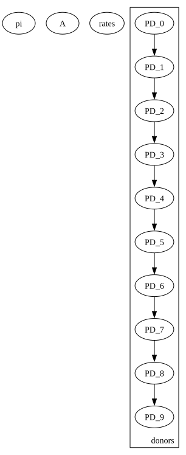
from tqdm.notebook import tqdmfrom pyro.optim import ClippedAdampyro.clear_param_store() # resetta tutti i parametri!STEPS =4000# optimization stepsoptimizer = ClippedAdam({'lr': 0.05})elbo = TraceEnum_ELBO(max_plate_nesting=1)svi = SVI(model, guide, optimizer, loss=elbo)loss = np.zeros(STEPS)for step in tqdm(range(STEPS)): loss[step] = svi.step(obs_torch)if step %20==0:print(f"Step {step} loss: {loss[step]}")
---------------------------------------------------------------------------KeyboardInterrupt Traceback (most recent call last)
CellIn[52], line 13 11 loss = np.zeros(STEPS)
12for step in tqdm(range(STEPS)):
---> 13 loss[step] = svi.step(obs_torch) 14if step % 20 == 0:
15print(f"Step {step} loss: {loss[step]}")
File c:\Users\tomma\AppData\Local\Programs\Python\Python312\Lib\site-packages\pyro\infer\svi.py:145, in SVI.step(self, *args, **kwargs) 143# get loss and compute gradients 144with poutine.trace(param_only=True) as param_capture:
--> 145 loss = self.loss_and_grads(self.model,self.guide,*args,**kwargs) 147 params = set(
148 site["value"].unconstrained() for site in param_capture.trace.nodes.values()
149 )
151# actually perform gradient steps 152# torch.optim objects gets instantiated for any params that haven't been seen yetFile c:\Users\tomma\AppData\Local\Programs\Python\Python312\Lib\site-packages\pyro\infer\traceenum_elbo.py:452, in TraceEnum_ELBO.loss_and_grads(self, model, guide, *args, **kwargs) 450 elbo = 0.0 451for model_trace, guide_trace inself._get_traces(model, guide, args, kwargs):
--> 452 elbo_particle = _compute_dice_elbo(model_trace,guide_trace) 453if is_identically_zero(elbo_particle):
454continueFile c:\Users\tomma\AppData\Local\Programs\Python\Python312\Lib\site-packages\pyro\infer\traceenum_elbo.py:214, in _compute_dice_elbo(model_trace, guide_trace) 211 cost = packed.neg(site["packed"]["log_prob"])
212 costs.setdefault(ordering[name], []).append(cost)
--> 214returnDice(guide_trace,ordering).compute_expectation(costs)File c:\Users\tomma\AppData\Local\Programs\Python\Python312\Lib\site-packages\pyro\infer\util.py:304, in Dice.compute_expectation(self, costs) 302 require_backward(query)
303 root = ring.sumproduct(log_factors, sum_dims)
--> 304root._pyro_backward() 305 probs = {
306 key: query._pyro_backward_result.exp()
307for key, query in queries.items()
308 }
310# Aggregate prob * cost terms.File c:\Users\tomma\AppData\Local\Programs\Python\Python312\Lib\site-packages\pyro\ops\einsum\adjoint.py:26, in Backward.__call__(self) 24while stack:
25 bwd, message = stack.pop()
---> 26stack.extend(bwd.process(message))File c:\Users\tomma\AppData\Local\Programs\Python\Python312\Lib\site-packages\pyro\ops\einsum\torch_marginal.py:38, in _EinsumBackward.process(self, message) 36 output_i = "".join(dim for dim in output_i if dim in inputs_i)
37 equation = inputs_i + "->" + output_i
---> 38 message_i = pyro.ops.einsum.torch_log.einsum(equation,*operands_i) 39if output_i != inputs[i]:
40for pos, dim inenumerate(inputs[i]):
File c:\Users\tomma\AppData\Local\Programs\Python\Python312\Lib\site-packages\pyro\ops\einsum\torch_log.py:40, in einsum(equation, *operands) 38 shift = shift.max(i, keepdim=True)[0]
39# avoid nan due to -inf - -inf---> 40 shift = shift.clamp(min=torch.finfo(shift.dtype).min) 41 exp_operands.append((operand - shift).exp())
43# permute shift to match outputKeyboardInterrupt:
# dict(pyro.get_param_store())
• ELBO steadily decreases from ≈174 k to ≈130 k and then plateaus → optimisation has mostly converged.pi_learn = dist.Dirichlet(torch.tensor(learned_pi))A_learn = dist.Dirichlet(torch.tensor(learned_A)) # attenzione alla to_eventrates_learn = dist.Gamma(torch.tensor(learned_rates_alpha), torch.tensor(learned_rates_beta))pi_mean = pi_learn.meanA_mean = A_learn.meanrates_mean = rates_learn.meanprint("Initial state probabilities (normalized):", pi_mean)print("Transition matrix (normalized):", A_mean)print("Poisson rates:", rates_mean)
T = obs_torch.shape[1]for t inrange(T):print(f"Osservazioni al tempo t={t}:") plt.figure(figsize=(10, 4)) plt.hist(obs_torch[:, t].numpy(), bins=range(0, 10), alpha=0.5, label='Reali') plt.hist(y_sim[:, t].numpy(), bins=range(0, 10), alpha=0.5, label='Simulate') plt.title(f'Distribuzione osservazioni al tempo t={t}') plt.legend() plt.show()
Osservazioni al tempo t=0:
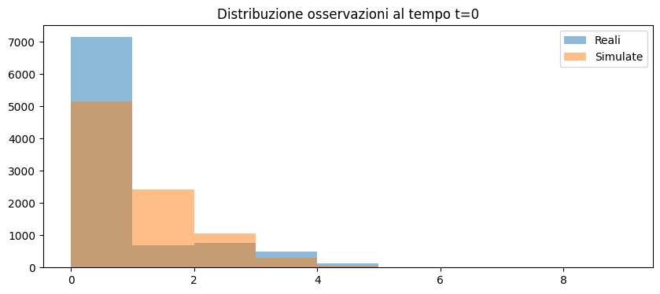
Osservazioni al tempo t=1:
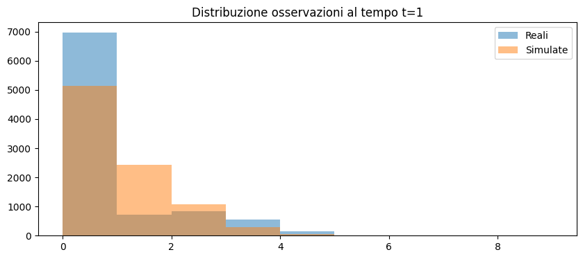
Osservazioni al tempo t=2:
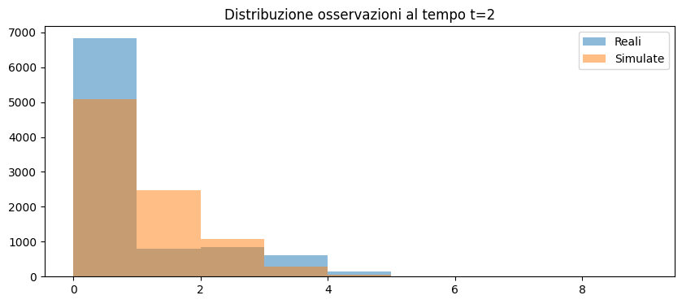
Osservazioni al tempo t=3:
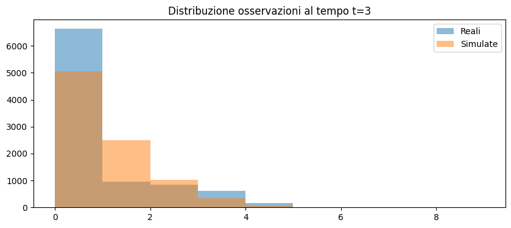
Osservazioni al tempo t=4:
Osservazioni al tempo t=5:
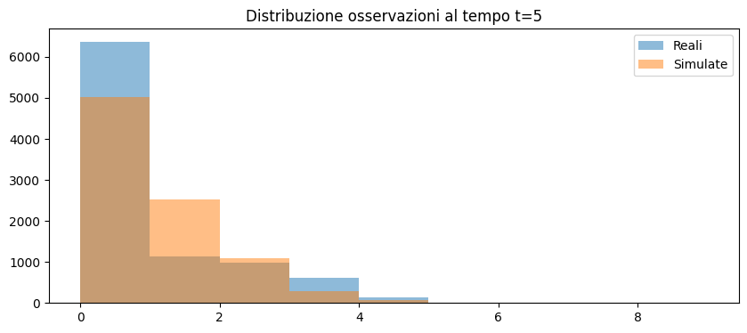
Osservazioni al tempo t=6:
Osservazioni al tempo t=7:
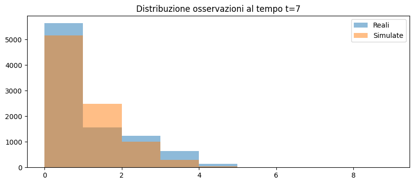
Osservazioni al tempo t=8:
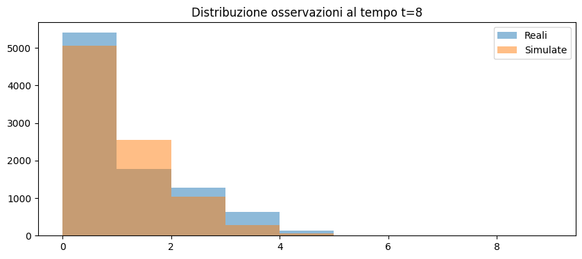
Osservazioni al tempo t=9:
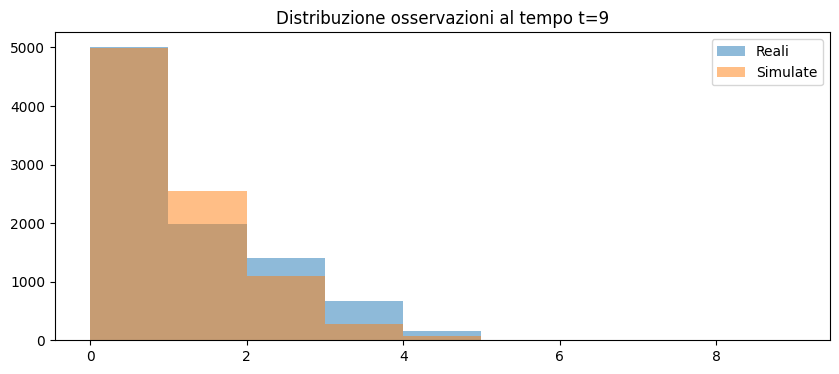
Osservazioni al tempo t=10:
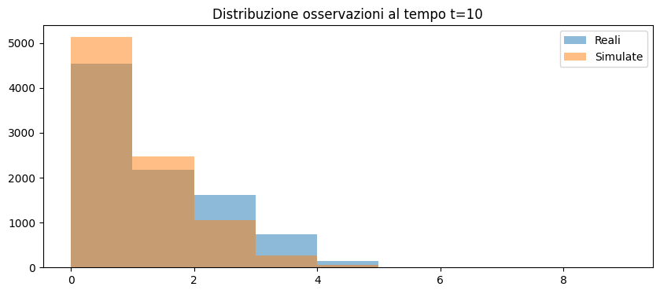
Osservazioni al tempo t=11:
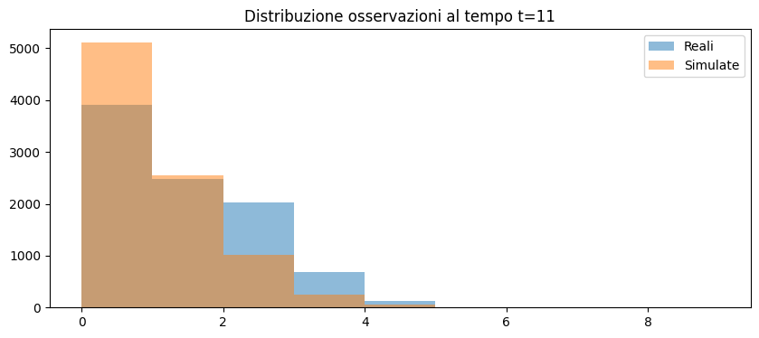
Osservazioni al tempo t=12:
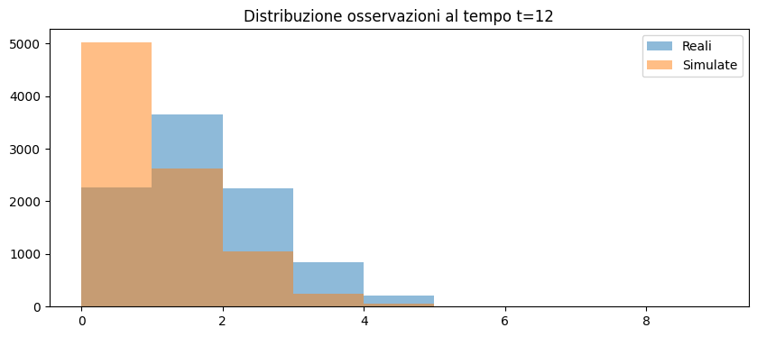
Osservazioni al tempo t=13:
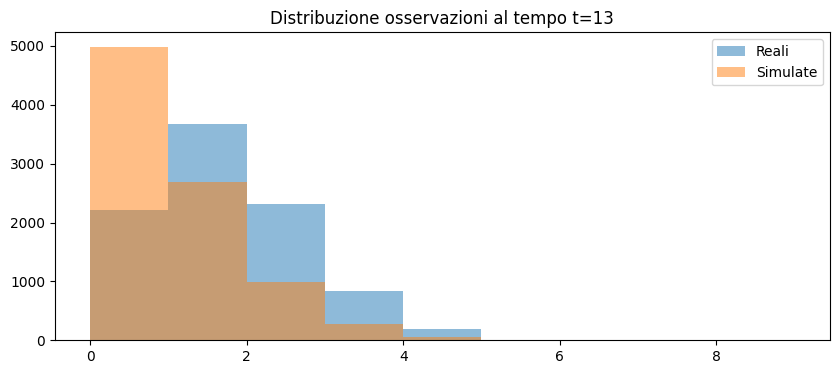
Osservazioni al tempo t=14:
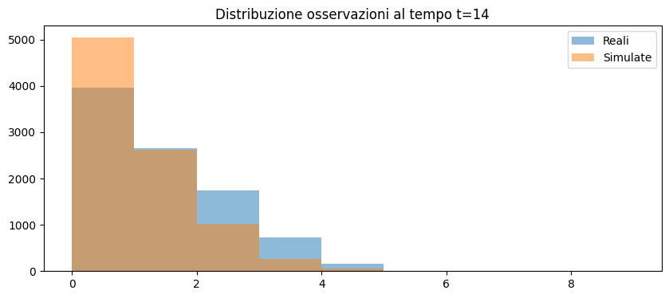
mean_real = obs_torch.float().mean(dim=0)mean_sim = y_sim.float().mean(dim=0)plt.plot(mean_real, label='Media reale')plt.plot(mean_sim, label='Media simulata')plt.title('Media delle osservazioni nel tempo')plt.legend()plt.show()
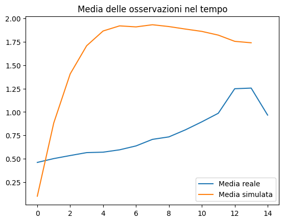
var_real = obs_torch.float().var(dim=0)var_sim = y_sim.float().var(dim=0)plt.plot(var_real, label='Varianza reale')plt.plot(var_sim, label='Varianza simulata')plt.title('Varianza delle osservazioni nel tempo')plt.legend()plt.show()
Viterbi algorithm
Viterbi decoder
Goal : for each donor find the MAP latent path \(z_{0:T}^\ast\).
C:\Users\erik4\AppData\Local\Programs\Python\Python313\Lib\site-packages\networkx\drawing\nx_pylab.py:457: UserWarning: No data for colormapping provided via 'c'. Parameters 'cmap' will be ignored
node_collection = ax.scatter(
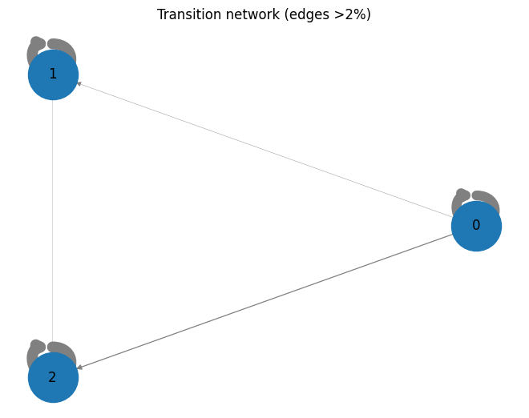
import matplotlib.pyplot as pltfrom matplotlib.colors import ListedColormap, BoundaryNormfrom matplotlib.patches import Patchimport numpy as np# ------------------------------------------------------------# globals# ------------------------------------------------------------K =3state_cols = ['#e41a1c', '#377eb8', '#4daf4a'] # 3 colori Set1cmap = ListedColormap(state_cols)norm = BoundaryNorm(np.arange(-0.5, K+0.5, 1), cmap.N)years_axis = np.arange(2009, 2024) # 2009 .. 2024yticks_vals = np.arange(0, 5) # 0 .. 4# ------------------------------------------------------------def plot_one(idx): x = obs_torch[idx].cpu().numpy() # osservazioni (T,) z = paths[idx] # stati latenti (T,) T =len(x)assert T ==len(years_axis), "years_axis length must match T" plt.figure(figsize=(10, 3)) plt.scatter(range(T), x, c=z, cmap=cmap, norm=norm, s=60, zorder=3) plt.step(range(T), x, where='mid', color='k', alpha=.35, zorder=2)# ---------- axis formatting ---------------------------------------- plt.xticks(ticks=range(T), labels=years_axis, rotation=45) plt.yticks(ticks=yticks_vals) plt.ylim(-0.5, 4.5) # blocca a 0–4 plt.grid(axis='y', linestyle=':', alpha=.4, zorder=1)# ---------- legenda discreta --------------------------------------- handles = [Patch(color=state_cols[k], label=f'State {k}') for k inrange(K)] plt.legend(handles=handles, title='latent state', bbox_to_anchor=(1.02, 1), loc='upper left', borderaxespad=0.) plt.title(f'Donor {idx}') plt.xlabel('year') plt.ylabel('# donations') plt.tight_layout() plt.show()for i in [100, 1002, 3002]: plot_one(i)
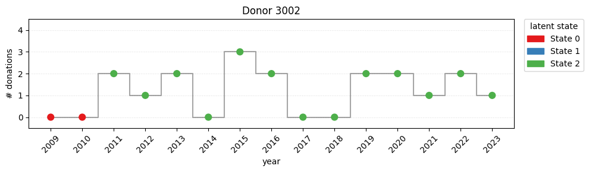
Stationary distribution vs initial π
Compute the stationary distribution of A and plot both as bars.
w, v = np.linalg.eig(A_mean.T)stationary = np.real(v[:,np.isclose(w,1)].flatten())stationary /= stationary.sum()df = pd.DataFrame({'π_init':pi_mean, 'π_stationary':stationary})df.plot(kind='bar'); plt.ylabel('probability')plt.title('Initial vs stationary distribution'); plt.tight_layout()
Testing
Actually, this model is the best one, looking the loss. Maybe for the prior
plot_hmm_params( transitions=A_norm, initial_probs=pi_norm, emissions=build_emission_matrix_truncated_poisson(rates_norm, max_k=4), emission_names=[str(i) for i inrange(4)] + ["≥4"])
Geometric
In this section, we use a Geometric distribution for the emission probabilities instead of a Poisson. Both distributions can model count data, but with different interpretations: the Poisson models the total number of events in a fixed period, while the Geometric models the number of trials until the first success. However, in our dataset, the observed data are yearly donation counts ranging from 0 to 4. Using a Geometric emission can provide a different latent structure compared to the Poisson, but it is less natural for bounded count data, since the Geometric is unbounded above. This choice mainly affects how the HMM explains the observed counts and the interpretation of the latent states.
import torchimport pyroimport pyro.distributions as distfrom pyro.infer import SVI, TraceEnum_ELBOfrom pyro.infer.autoguide import AutoDeltafrom pyro.optim import Adamdef model(observations): N, T = observations.shape num_states =3 pi = pyro.sample("pi", dist.Dirichlet(torch.ones(num_states))) A = pyro.sample("A", dist.Dirichlet(torch.ones(num_states, num_states)).to_event(1)) probs = pyro.sample("probs", dist.Beta(2.0* torch.ones(num_states), torch.ones(num_states)).to_event(1))with pyro.plate("donors", N): x = pyro.sample("PD_0", dist.Categorical(pi), infer={"enumerate": "parallel"})for t in pyro.markov(range(T)): x = pyro.sample(f"PD_{t+1}", dist.Categorical(A[x]), infer={"enumerate": "parallel"}) pyro.sample(f"y_{t}", dist.Geometric(probs[x]), obs=observations[:, t])def guide(observations): num_states =3 pi_alpha = pyro.param("pi_alpha", torch.ones(num_states), constraint=dist.constraints.positive) A_alpha = pyro.param("A_alpha", torch.ones(num_states, num_states), constraint=dist.constraints.positive) probs_alpha = pyro.param("probs_alpha", 2.0* torch.ones(num_states), constraint=dist.constraints.positive) probs_beta = pyro.param("probs_beta", torch.ones(num_states), constraint=dist.constraints.positive) pyro.sample("pi", dist.Dirichlet(pi_alpha)) pyro.sample("A", dist.Dirichlet(A_alpha).to_event(1)) pyro.sample("probs", dist.Beta(probs_alpha, probs_beta).to_event(1))pyro.clear_param_store() # resetta tutti i parametri!optimizer = Adam({"lr": 0.01})svi = SVI(model, guide, optimizer, loss=TraceEnum_ELBO(max_plate_nesting=1))# pyro.render_model(model, model_args=(obs_torch,), render_distributions=False)for step inrange(2_000): loss = svi.step(obs_torch)if step %200==0:print(f"Step {step} loss: {loss}")
Most people start in state 2, which is expected since some individuals begin donating later or were not eligible to donate due to their age. The transition matrix shows that individuals in state 2 tend to move to state 0 or 1. Once they reach state 0 or 1, donors tend to maintain their donation behavior. State 1 appears to be the most populated, likely representing occasional donors, while state 0 can be interpreted as the state of frequent donors.
import numpy as npfrom scipy.stats import geomdef build_emission_matrix_truncated_geometric(rates, max_k=4): S =len(rates) K = max_k +1# da 0 a 4, 5 valori ps =1/ (rates +1) emissions = np.zeros((S, K))for s inrange(S):# Geometric shiftata: geom.pmf(k+1, p)for k inrange(max_k): emissions[s, k] = geom.pmf(k+1, ps[s])# L'ultimo raccoglie tutta la coda: P(y >= max_k) emissions[s, max_k] =1- geom.cdf(max_k, ps[s])return emissionsemissions_matrix = build_emission_matrix_truncated_geometric(rates_norm, max_k=4)plot_hmm_params( transitions=A_norm, initial_probs=pi_norm, emissions=emissions_matrix, emission_names=[str(i) for i inrange(4)] + ["≥4"])
Models with covariates
Mixed Model
This is not any more a HMM but is a mixture model where each units has only one latent variable
c:\Users\tomma\AppData\Local\Programs\Python\Python312\Lib\site-packages\pyro\util.py:303: UserWarning: Found vars in model but not guide: {'A_base', 'pi_base'}
warnings.warn(f"Found vars in model but not guide: {bad_sites}")
# Recupera i valori ottimizzatitotal_count = pyro.param("total_count").detach().cpu().numpy() # shape (K,)emiss_logits = pyro.param("emiss_logits").detach().cpu().numpy() # shape (K,)probs =1/ (1+ np.exp(-emiss_logits)) # sigmoidprint("Rate Negative Binomial per stato:")for k inrange(len(total_count)):print(f" Stato {k}: total_count = {total_count[k]:.3f}, prob = {probs[k]:.3f}")
means = total_count * (1- probs) / probsprint("Media Negative Binomial per stato:")for k inrange(len(total_count)):print(f" Stato {k}: mean = {means[k]:.3f}")
import numpy as np# 1. Estrai i parametri stimatitotal_count = pyro.param("total_count").detach().cpu().numpy() # [K]emiss_logits = pyro.param("emiss_logits").detach().cpu().numpy() # [K]probs =1/ (1+ np.exp(-emiss_logits)) # [K]# for dependency with init_W and init_b# init_W = pyro.param("init_W").detach().cpu().numpy() # [K, C]# init_b = pyro.param("init_b").detach().cpu().numpy() # [K]# covs_0 = covariates_torch[:, 0, :].cpu().numpy() # [N, C]# logits = covs_0 @ init_W.T + init_b # [N, K]# probs_init = np.exp(logits) / np.exp(logits).sum(axis=1, keepdims=True) # [N, K]# init_probs = probs_init.mean(axis=0) # [K]# Only inital logitsinit_logits = pyro.param("init_logits").detach().cpu().numpy() # [K]init_probs = np.exp(init_logits) / np.exp(init_logits).sum() # [K]K, C = pyro.param("trans_W").shape[-2:]trans_W = pyro.param("trans_W").detach().cpu().numpy() # [K, K, C]trans_b = pyro.param("trans_b").detach().cpu().numpy() # [K, K]covs = covariates_torch.cpu().numpy() # [N, T, C]# Media sulle covariate del primo annocovs_mean = covs[:, 0, :].mean(axis=0) # [C]# Matrice di transizione media per ogni statotransitions = np.zeros((K, K))for prev inrange(K): logits = trans_b[prev] + trans_W[prev] @ covs_mean # [K] probs_tr = np.exp(logits) / np.exp(logits).sum() transitions[prev, :] = probs_tr# Costruisci la matrice di emissione Negative Binomial (truncated)def build_emission_matrix_truncated_nbinom(total_count, probs, max_k=4):from scipy.stats import nbinom S =len(total_count) K = max_k +1 emissions = np.zeros((S, K))for s inrange(S):for k inrange(max_k): emissions[s, k] = nbinom.pmf(k, total_count[s], probs[s]) emissions[s, max_k] =1- nbinom.cdf(max_k-1, total_count[s], probs[s])return emissionsemissions_matrix = build_emission_matrix_truncated_nbinom(total_count, probs, max_k=4)# Stampa i risultati numericiprint("Probabilità iniziali (media popolazione):", init_probs)print("Negative Binomial total_count per stato:", total_count)print("Negative Binomial probs per stato:", probs)print("Matrice di transizione (media sulle covariate):\n", transitions)plot_hmm_params( transitions=transitions, initial_probs=init_probs, emissions=emissions_matrix, emission_names=[str(i) for i inrange(4)] + ["≥4"])
import pandas as pdrows = []for i inrange(K):for j inrange(K):for c, name inenumerate(['birth_year_norm', 'gender_code']): rows.append({'from': i, 'to': j, 'covariate': name, 'weight': trans_W[i,j,c]})df = pd.DataFrame(rows)print(df.pivot_table(index=['from', 'to'], columns='covariate', values='weight'))
Dynamic Covariates
Negative Binomial
import pyrofrom pyro.optim import Adamfrom pyro.infer import SVI, TraceEnum_ELBOpyro.clear_param_store()optimizer = Adam({"lr": 0.1, "weight_decay": 0.1})elbo = TraceEnum_ELBO(max_plate_nesting=1)svi = SVI(model, guide, optimizer, loss=elbo)num_steps =2_000for step inrange(num_steps): loss = svi.step(obs_torch, full_cov_torch)# Aggiungi la penalità soft alle emissioni, dopo ogni step# penalty = emission_penalty(weight=10.0) penalty = total_penalty() total_loss = loss + penalty.item()if step % (num_steps //10) ==0:print(f"Step {step} : loss = {loss:.2f} (penalty: {penalty.item():.2f}) tot: {total_loss:.2f}")
---------------------------------------------------------------------------NameError Traceback (most recent call last)
CellIn[26], line 12 10 num_steps = 2_000 11for step inrange(num_steps):
---> 12 loss = svi.step(obs_torch, full_cov_torch)
13# Aggiungi la penalità soft alle emissioni, dopo ogni step 14# penalty = emission_penalty(weight=10.0) 15 penalty = total_penalty()
NameError: name 'full_cov_torch' is not defined
# ────────────────────────────────────────────────────────────────# HMM a stati discreti con emissioni Negative Binomial,# rivisto per far sì che lo STATE 0 sia visitato più spesso# ────────────────────────────────────────────────────────────────import torch, pyro# from pyro import constraintsfrom pyro.infer import config_enumerate, SVI, TraceEnum_ELBOfrom pyro.optim import Adamimport pyro.distributions as distK =3# numero stati nascosti# ---------- TARGET (usate per “penalties” o come vere prior) ----# Stato 0 ora ha mean ≈ 0.5 invece di 0.01target_total_count = torch.tensor([2.0, 1.5, 1.5])target_probs = torch.tensor([0.80, 0.50, 0.30])target_init_probs = torch.tensor([0.60, 0.20, 0.20])target_trans_probs = torch.tensor([[0.70, 0.15, 0.15], [0.25, 0.50, 0.25], [0.25, 0.25, 0.50]])# ---------- PARAM INIT ---------------------------------------------------------init_total_count = target_total_count.clone()init_logits = torch.logit(target_probs.clone()) # emiss logits# ───────────────────────────────────────────────── MODEL ────────────────────────@config_enumeratedef model(observations, donors_covariates): N, T = observations.shape C = donors_covariates.shape[2]# PARAMETRI LEARNABLE (usiamo pyro.param) total_count = pyro.param("total_count", init_total_count.clone(), constraint=constraints.positive) emiss_logits = pyro.param("emiss_logits", init_logits.clone()) # shape (K,) init_logits_param = pyro.param("init_logits", torch.zeros(K)) trans_W = pyro.param("trans_W", torch.zeros(K, K, C)) trans_b = pyro.param("trans_b", torch.zeros(K, K))# ------------------ modello generativo -------------------------------------with pyro.plate("donors", N): z_prev = pyro.sample("z_0", dist.Categorical(logits=init_logits_param), infer={"enumerate": "parallel"}) nb_total = total_count[z_prev] nb_prob = torch.sigmoid(emiss_logits[z_prev]) pyro.sample("obs_0", dist.NegativeBinomial(total_count=nb_total, probs=nb_prob), obs=observations[:, 0])for t inrange(1, T): cov_t = donors_covariates[:, t, :] # (N, C) trans_logits = (trans_W[z_prev] * cov_t[:, None, :]).sum(-1) + trans_b[z_prev] z_t = pyro.sample(f"z_{t}", dist.Categorical(logits=trans_logits), infer={"enumerate": "parallel"}) nb_total = total_count[z_t] nb_prob = torch.sigmoid(emiss_logits[z_t]) pyro.sample(f"obs_{t}", dist.NegativeBinomial(total_count=nb_total, probs=nb_prob), obs=observations[:, t]) z_prev = z_t# --------------- soft-constraint via penalty ------------------------------ pyro.factor("all_penalties", -total_penalty())# ────────────────────────────────────────── GUIDE ──────────────────────────────def guide(observations, donors_covariates): N, T = observations.shape C = donors_covariates.shape[2] trans_W_q = pyro.param("trans_W_q", torch.zeros(K, K, C)) trans_b_q = pyro.param("trans_b_q", torch.zeros(K, K)) init_logits_q = pyro.param("init_logits_q", torch.zeros(K))with pyro.plate("donors", N): z_prev = pyro.sample("z_0", dist.Categorical(logits=init_logits_q))for t inrange(1, T): cov_t = donors_covariates[:, t, :] logits_q = (trans_W_q[z_prev] * cov_t[:, None, :]).sum(-1) + trans_b_q[z_prev] z_prev = pyro.sample(f"z_{t}", dist.Categorical(logits=logits_q))# ─────────────────────────────── PENALTIES (riviste) ───────────────────────────def emission_penalty(): w = torch.tensor([200.0, 10.0, 40.0]) # ↑↑ stato 0, un po’ stato 2 tot = pyro.param("total_count") prob = torch.sigmoid(pyro.param("emiss_logits"))return ((w*(tot - target_total_count)**2).sum() + (w*(prob - target_probs) **2).sum())def initial_state_penalty(): init_p = torch.softmax(pyro.param("init_logits"), -1)return200.0*((init_p - target_init_probs)**2).sum()def transition_penalty(): trans_p = torch.softmax(pyro.param("trans_b"), -1) W = torch.tensor([[200., 40., 40.], # riga 0 → voglio diag alta [ 20., 10., 20.], [ 20., 20., 10.]])return ((W*(trans_p - target_trans_probs)**2)).sum()def total_penalty():return (emission_penalty() + initial_state_penalty() + transition_penalty())# ───────────────────────────────────── TRAINING LOOP ───────────────────────────pyro.clear_param_store()optimizer = Adam({"lr": 0.05, "weight_decay": 0.0}) # meno weight-decayelbo = TraceEnum_ELBO(max_plate_nesting=1)svi = SVI(model, guide, optimizer, loss=elbo)num_steps =10_000for step inrange(num_steps): loss = svi.step(obs_torch, full_cov_torch) penalty = total_penalty().item()if step % (num_steps //10) ==0:print(f"step {step:3d} | ELBO {loss:,.0f} | penalty {penalty:6.2f} | total {loss+penalty:,.0f}")
---------------------------------------------------------------------------NameError Traceback (most recent call last)
CellIn[27], line 120 118 num_steps = 10_000 119for step inrange(num_steps):
--> 120 loss = svi.step(obs_torch, full_cov_torch)
121 penalty = total_penalty().item()
122if step % (num_steps // 10) == 0:
NameError: name 'full_cov_torch' is not defined
import numpy as np# Recupera i valori ottimizzatitotal_count = pyro.param("total_count").detach().cpu().numpy() # shape (K,)emiss_logits = pyro.param("emiss_logits").detach().cpu().numpy() # shape (K,)probs =1/ (1+ np.exp(-emiss_logits)) # sigmoidprint("Rate Negative Binomial per stato:")for k inrange(len(total_count)):print(f" Stato {k}: total_count = {total_count[k]:.3f}, prob = {probs[k]:.3f}")init_logits = pyro.param("init_logits").detach().cpu().numpy() # [K]init_probs = np.exp(init_logits) / np.exp(init_logits).sum() # [K]K, C = pyro.param("trans_W").shape[-2:]trans_W = pyro.param("trans_W").detach().cpu().numpy() # [K, K, C]trans_b = pyro.param("trans_b").detach().cpu().numpy() # [K, K]covs = full_cov_torch.cpu().numpy() # [N, T, C]# Media sulle covariate del primo annocovs_mean = covs[:, 0, :].mean(axis=0) # [C]# Matrice di transizione media per ogni statotransitions = np.zeros((K, K))for prev inrange(K): logits = trans_b[prev] + trans_W[prev] @ covs_mean # [K] probs_tr = np.exp(logits) / np.exp(logits).sum() transitions[prev, :] = probs_tr# Costruisci la matrice di emissione Negative Binomial (truncated)def build_emission_matrix_truncated_nbinom(total_count, probs, max_k=4):from scipy.stats import nbinom S =len(total_count) K = max_k +1 emissions = np.zeros((S, K))for s inrange(S):for k inrange(max_k): emissions[s, k] = nbinom.pmf(k, total_count[s], probs[s]) emissions[s, max_k] =1- nbinom.cdf(max_k-1, total_count[s], probs[s])return emissionsemissions_matrix = build_emission_matrix_truncated_nbinom(total_count, probs, max_k=4)# Stampa i risultati numericiprint("Probabilità iniziali (media popolazione):", init_probs)print("Negative Binomial total_count per stato:", total_count)print("Negative Binomial probs per stato:", probs)print("Matrice di transizione (media sulle covariate):\n", transitions)# with torch.no_grad():# probs = [torch.softmax(pyro.param("init_logits"), -1)]# P = torch.softmax(pyro.param("trans_b"), -1)# print("Init-probs:", probs)# print("Transizione:\n", P.cpu().numpy())plot_hmm_params( transitions=transitions, initial_probs=init_probs, emissions=emissions_matrix, emission_names=[str(i) for i inrange(4)] + ["≥4"])
import numpy as np# Esempio per 'ages_norm'ages_range = np.linspace(-2, 2, 21) # da molto giovani a molto anziani (normalizzato)covs_mean = full_covariates.mean(axis=(0,1)) # [C]matrici = []for age in ages_range: x = covs_mean.copy() x[2] = age # supponiamo ages_norm sia la terza covariata trans_matrices = []for prev inrange(K): logits = trans_b[prev] + trans_W[prev] @ x probs_tr = np.exp(logits) / np.exp(logits).sum() trans_matrices.append(probs_tr) matrici.append(np.array(trans_matrices)) # shape (K, K)# Ad esempio: transizione dallo stato 0 a 2 in funzione dell'etàplt.plot(ages_range, [mat[0,1] for mat in matrici])plt.xlabel("ages_norm")plt.ylabel("P(0→2)")plt.title("Probabilità di transizione 0→1 al variare dell'età normalizzata")plt.show()
import numpy as npimport matplotlib.pyplot as pltK = trans_b.shape[0] # Numero di statiC = trans_W.shape[2] # Numero di covariateages_range = np.linspace(-2, 2, 21)covs_mean = full_covariates.mean(axis=(0,1)) # [C]matrici = []for age in ages_range: x = covs_mean.copy()# supponiamo ages_norm sia la covariata indice idx_age idx_age =2# cambialo se ages_norm non è la terza! x[idx_age] = age trans_matrices = []for prev inrange(K): logits = trans_b[prev] + trans_W[prev] @ x probs_tr = np.exp(logits) / np.exp(logits).sum() trans_matrices.append(probs_tr) matrici.append(np.array(trans_matrices)) # shape (K, K)matrici = np.array(matrici) # shape (len(ages_range), K, K)# Plot a griglia: ogni subplot è la transizione da i a jfig, axes = plt.subplots(K, K, figsize=(K*3, K*3), sharex=True, sharey=True)for i inrange(K):for j inrange(K): axes[i, j].plot(ages_range, matrici[:, i, j]) axes[i, j].set_title(f'P({i}→{j})')if i == K-1: axes[i, j].set_xlabel('ages_norm')if j ==0: axes[i, j].set_ylabel('Prob')plt.suptitle('Probabilità di transizione al variare di ages_norm')plt.tight_layout()plt.show()
import numpy as npimport matplotlib.pyplot as pltdef plot_transition_grid(var_name, covariate_names, trans_b, trans_W, full_covariates, grid_vals=None):""" Draws K×K small multiples of transition probabilities versus a covariate. • If the covariate has ≤2 distinct values -> bar plot (one bar per value). • Otherwise -> line plot on grid_vals (default linspace(-2, 2, 21)). """ K = trans_b.shape[0] idx = covariate_names.index(var_name)# ------------------------------------------------------------------# Choose values at which to evaluate the covariate# ------------------------------------------------------------------if grid_vals isNone: unique_vals = np.unique(full_covariates[..., idx])# Treat as categorical when two or fewer distinct values existiflen(unique_vals) <=2: grid_vals = unique_vals.astype(float) plot_mode ="bar"else: grid_vals = np.linspace(-2, 2, 21) plot_mode ="line"else: plot_mode ="line"# ------------------------------------------------------------------# Build transition matrices for each value in grid_vals# ------------------------------------------------------------------ covs_mean = full_covariates.mean(axis=(0, 1)) # Shape [C] matrices = [] # Will become (G, K, K)for v in grid_vals: x = covs_mean.copy() x[idx] = v P = []for prev inrange(K): logits = trans_b[prev] + trans_W[prev] @ x probs = np.exp(logits) / np.exp(logits).sum() P.append(probs) matrices.append(np.vstack(P)) matrices = np.stack(matrices) # Shape (G, K, K)# ------------------------------------------------------------------# Plotting# ------------------------------------------------------------------ fig, axes = plt.subplots(K, K, figsize=(K*2.4, K*2.4), sharex=True, sharey=True)for i inrange(K):for j inrange(K): ax = axes[i, j]if plot_mode =="line": ax.plot(grid_vals, matrices[:, i, j])else: # bar plot bar_width =0.6 ax.bar(grid_vals, matrices[:, i, j], width=bar_width, color=['#1f77b4', '#ff7f0e']) ax.set_xticks(grid_vals) ax.set_title(f"P({i}→{j})", fontsize=8)if i == K -1: ax.set_xlabel(var_name)if j ==0: ax.set_ylabel("Prob") plt.suptitle(f"Transition probabilities vs {var_name}", y=1.02) plt.tight_layout() plt.show()# ------------------------------------------------------------------# Call the function for every covariate in the CORRECT order# ------------------------------------------------------------------cov_names = ["const","birth_year_norm", # 0 continuous"gender_code", # 1 binary"ages_norm", # 2 continuous"covid_years"] # 3 binaryfor name in cov_names: plot_transition_grid(name, cov_names, trans_b, trans_W, full_covariates)
import matplotlib.pyplot as pltimport numpy as npdef plot_weights_grid( trans_W, covariate_names,*, const_first=False, skip_const=False):""" Plot a K×K grid of barplots for the weight tensor `trans_W` using neutral grey colours and no seaborn. Parameters ---------- trans_W : ndarray, shape (K, K, C) covariate_names : list[str] length = C const_first : bool, default False If True, the column named 'const' is plotted first. skip_const : bool, default False If True, the column named 'const' is removed from the plot. """# --------------------------------------------------------------# basic checks# --------------------------------------------------------------if trans_W.shape[2] !=len(covariate_names):raiseValueError("`trans_W` and `covariate_names` length mismatch") idx =list(range(len(covariate_names))) # [0, 1, …, C-1]# --------------------------------------------------------------# handle constant column# --------------------------------------------------------------if"const"in covariate_names: const_idx = covariate_names.index("const")if skip_const: idx.remove(const_idx) # drop itelif const_first: idx = [const_idx] + [i for i in idx if i != const_idx]# --------------------------------------------------------------# reorder data for plotting only# -------------------------------------------------------------- names_plot = [covariate_names[i] for i in idx] W_plot = trans_W[..., idx] # shape (K, K, C_plot) K, _, C_plot = W_plot.shape# --------------------------------------------------------------# pick neutral colours (light → dark grey)# -------------------------------------------------------------- greys = plt.cm.Greys(np.linspace(0.3, 0.7, C_plot))# --------------------------------------------------------------# plotting# -------------------------------------------------------------- fig, axes = plt.subplots(K, K, figsize=(K *2.4, K *2.4), sharex=True)for i inrange(K):for j inrange(K): ax = axes[i, j] ax.bar( x=np.arange(C_plot), height=W_plot[i, j], color=greys, edgecolor='black', linewidth=0.3 ) ax.set_title(f"W({i}→{j})", fontsize=8) ax.set_xticks(np.arange(C_plot))if i == K -1: ax.set_xticklabels(names_plot, rotation=90)else: ax.set_xticklabels([]) plt.suptitle("Covariate weights for each transition", y=1.03) plt.tight_layout() plt.show()# --------------------------------------------------------------# example call# --------------------------------------------------------------cov_names = ["birth_year_norm", # 0"gender_code", # 1"ages_norm", # 2"covid_years", # 3"const"] # 4plot_weights_grid(trans_W, cov_names, const_first=True, skip_const=False)
import pandas as pdrows = []for i inrange(K):for j inrange(K):for c, name inenumerate(['birth_year_norm', 'gender_code', 'ages_norm', 'covid_years']): rows.append({'from': i, 'to': j, 'covariate': name, 'weight': trans_W[i,j,c]})df = pd.DataFrame(rows)print(df.pivot_table(index=['from', 'to'], columns='covariate', values='weight'))
c:\Users\erik4\AppData\Local\Programs\Python\Python313\Lib\site-packages\pyro\infer\traceenum_elbo.py:355: UserWarning: TraceEnum_ELBO found no sample sites configured for enumeration. If you want to enumerate sites, you need to @config_enumerate or set infer={"enumerate": "sequential"} or infer={"enumerate": "parallel"}? If you do not want to enumerate, consider using Trace_ELBO instead.
warnings.warn(